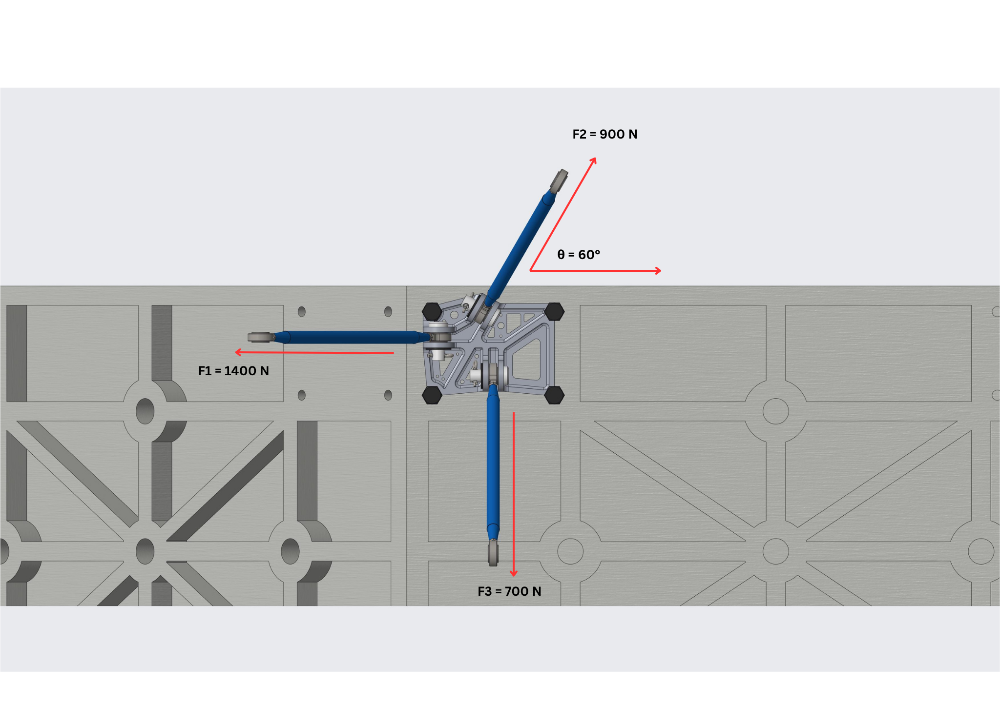
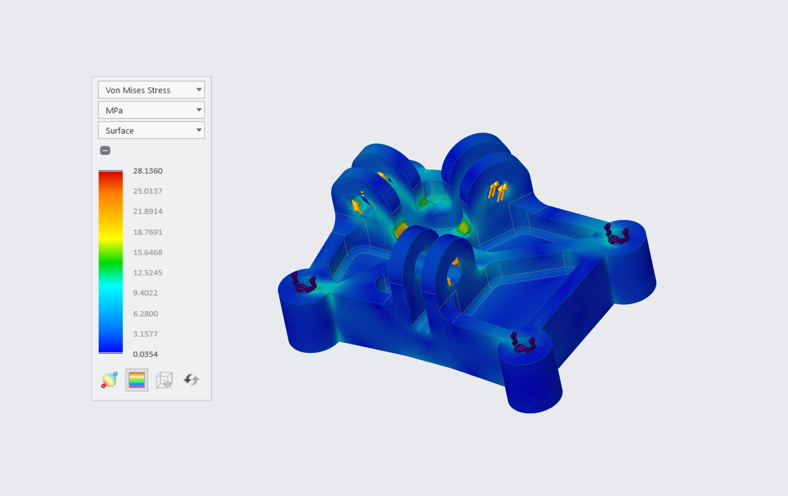
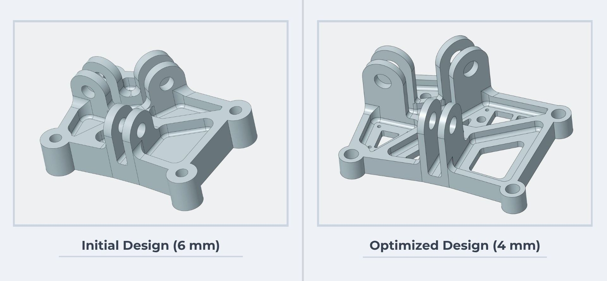
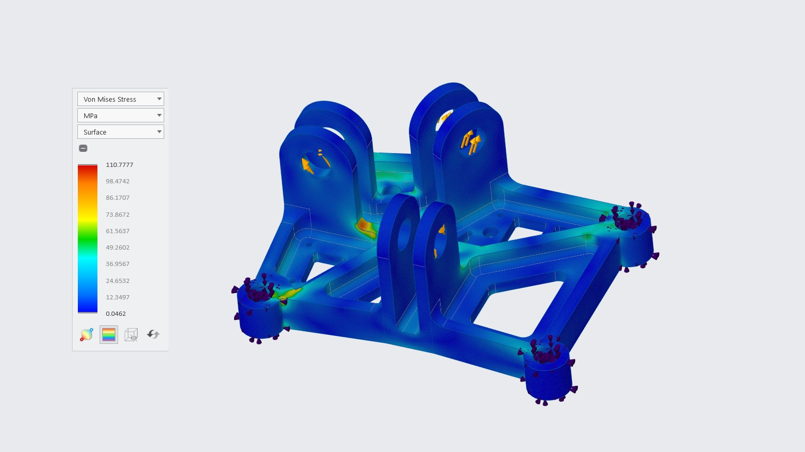
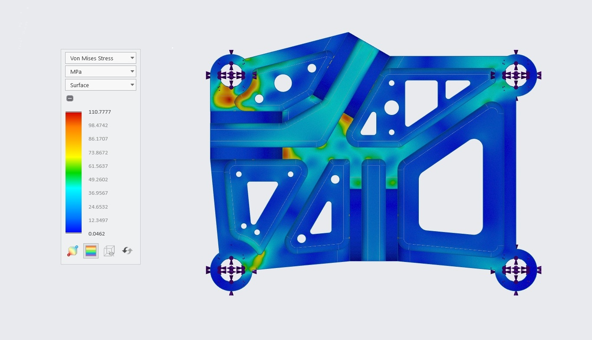
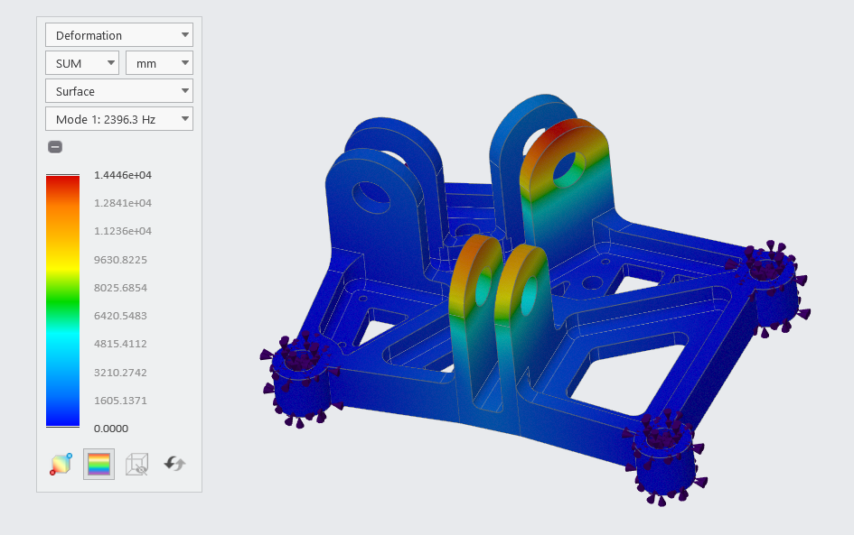

Overview
Design and structural optimization of a UAV payload support bracket using FEA-driven geometry refinement in Creo. The project focuses on improving load transfer efficiency while minimizing excess material.
Load-path-driven bracket design and FEA-based structural optimization.

Design and structural optimization of a UAV payload support bracket using FEA-driven geometry refinement in Creo. The project focuses on improving load transfer efficiency while minimizing excess material.
The following section illustrates the structural configuration of the bracket and the resulting load distribution derived from initial payload calculations.


Load Assumptions and Distribution
The applied load is transferred to the bracket through three supporting struts arranged in a non-symmetrical configuration. Each strut is inclined at approximately 65° relative to the mounting platform, resolving the load into combined vertical and lateral components. Due to the unequal load distribution across the struts, the bracket experiences a non-uniform force condition, which directly influences the resulting stress behavior and motivates the need for structural optimization.
Based on the defined loading conditions, an initial bracket design was developed with a conservative uniform thickness to ensure structural integrity during early stages of the design process.
Key Design Features
Simulation Assessment
The baseline simulation produced a maximum stress of approximately 28 MPa, well below the yield strength of Aluminum 7075-T6. The predominance of low-stress regions indicated excess material within the structure, making the design a suitable candidate for weight reduction and geometry refinement.


The bracket geometry was progressively refined by reducing thickness and removing material from low-stress regions based on FEA results. Increasing stress levels across iterations indicate improved material utilization while maintaining a safe margin below the material yield strength. The final configuration achieves an effective balance between weight reduction and structural performance.
Iteration Summary
| Iteration | Design Changes | Mass | Deformation | Stress | FoS |
|---|---|---|---|---|---|
| 1 – Baseline Design | Uniform 6 mm thickness across plate, ribs, and lug regions | 411.04 g | 0.014 mm | 28 MPa | 17.9 |
| 2 – Thickness Optimization |
Plate reduced to 5 mm Lower rib reduced to 4 mm Lug retained at 6 mm |
319.36 g | 0.029 mm | 46 MPa | 10.9 |
| 3 – Final Geometry Optimization |
Plate and ribs reduced to 4 mm Rib height reduced Cutouts added in low-stress regions Lug OD reduced (26 → 24 mm) |
183.10 g | 0.13 mm | 110 MPa | 4.5 |
Static Structural Validation


Static structural analysis confirmed that the optimized bracket safely carries the design load while maintaining stress levels well below the yield strength of Aluminum 7075-T6. Peak stresses are confined to expected load-transfer regions, while the overall stress distribution indicates efficient material utilization throughout the structure.
Modal Validation
| Mode | Natural Frequency |
|---|---|
| 1 | 2396.38 Hz |
| 2 | 2428.46 Hz |
| 3 | 2542.14 Hz |
| 4 | 2598.93 Hz |
| 5 | 2624.75 Hz |
| 6 | 2892.50 Hz |

A modal analysis was performed on the optimized bracket using fixed mounting conditions to identify its natural frequencies and assess susceptibility to vibration-induced resonance. The first six modes were found between 2396 Hz and 2893 Hz, indicating a highly stiff structure despite the significant mass reduction achieved through optimization.
Key Results
Through iterative FEA-driven refinement, the bracket geometry was optimized to improve material utilization while maintaining structural performance. Material was systematically removed from low-stress regions, resulting in a significantly lighter design without compromising critical load paths. Static and modal validation confirmed that the final design remains structurally efficient, demonstrating a successful balance between weight reduction, strength, stiffness, and vibration performance for UAV payload support applications.